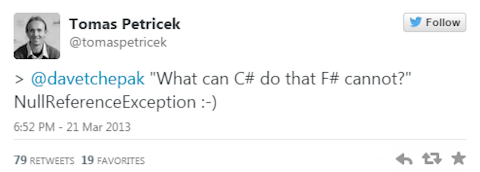

Intro to F#
let rec cast<'a> (myList: obj list) =
match myList with
| head::tail ->
match head with
| :? 'a as a -> a::(cast tail)
| _ -> cast tail
| [] -> []
Jonathan Wood jwood@wintellect.com / dotnetmeditations.com / @JWood
Why F#?
- Fewer bugs
- Immutable by default
- Units of Measure
- Type providers
- Option types
- Pattern matching
- Rapid prototyping with the F# Interactive
- Interoperability
Demo - Basic Syntax
Immutability
Option Types

let hasBalance (balance: float option) =
match balance with
| Some b -> printfn "Balance - %f" b
| None -> printfn "No balance available"
let x = "4"
match Int32.TryParse(x) with
| (true, value) -> printfn "Parsed - %i" value
| (false, _) -> printfn "No parsing for you!"
Type Providers

open FSharp.Data
let deliveryData = CsvProvider<"delivery_data.csv">.GetSample()
Units of Measure
[<Measure>] type dollar
let dollarsToEuros dollars: float<dollar> =
dollars * 0.74<dollar>
- FAKE
- FSharp.Data
- FSLabs